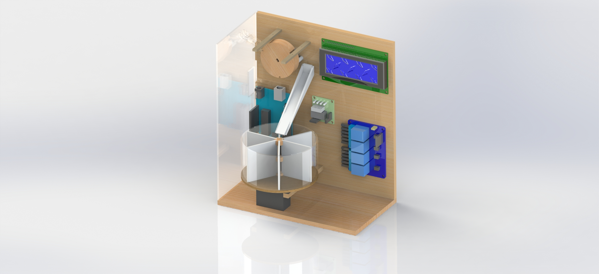
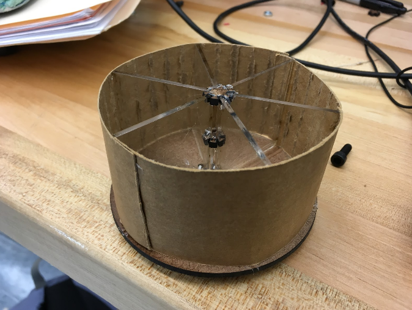

Sprint Goals
- Last iteration of resistor dispensing system.
- Final integration of digital potentiometer and relays into voltage divider circuit.
- Final design and implementation of resistor sorting system.
- Polish final product!
Electrical
We had some problems with the digital potentiometers during this sprint. The circuit that we had implemented in Sprint 3 to get the potentiometers working had been altered, so it appeared that the digital potentiometers were not working and it took an unexpected amount of time to get the circuit working again. We also discovered that several of our potentiometers had been burned out, which caused them to either not work, or have incorrect resistances. We replaced the broken digital potentiometers, and recreated the circuit so that it was able to easily be connected to the relay. We also calibrated the digital potentiometers so that the values we calculated for them would be as close to the actual resistances they generated as possible. This was because the digital potentiometers often did not follow the same resistance calculations as specified in the data sheet.
 Current circuit diagram
Current circuit diagram
Mechanical
During this sprint, more electrical components were integrated into the CAD. The required distances and orientations of the components (due to wires and connections and the such) were an interesting new challenge. It forced our team to communicate more about what we needed in order to be successful. While our CAD doesn’t contain particularly specific models of our electrical pieces, we did have an understanding of how we needed to place them relative to all of the mechanical pieces in the CAD and accounted for the space they would need.
 Final CADOne of the things we iterated on this sprint was the ramp between the user and the notched wheel. We made the ramp narrower so it would hug the wide part of the resistor a little more tightly and added a component on the top. The hoped-for outcome was that the gaps on the edges of the ramp would only be wide enough for the leads of the resistor, which would force the resistor to fall against the wheel in the proper orientation.
We also assembled our resistor sorting vessel for the most part. We were able to get together all of the pieces except for the clear outer casing, so we improvised with a strip of cardboard. It worked well for our purposes; the cardboard was light and held the circular shape with ease.
 The completed vessel.We also put together a basic ramp to get the resistors from the wheel to the sorting vessel.
Computing
Due to problems with the digital potentiometer that caused it to stop working shortly after the start of the sprint, the computing team began by integrating the relay, which would switch between 3 different resistors--a 100Ω, 10kΩ, 1MΩ. We created a second file (as part of the same program) to write all the code related to the relay and reading the resistances, and designed it to be modular enough to replace the resistors with digital potentiometers by only changing a few lines of code.
We also designed a way to have the user calibrate the wheel before hand. The stepper motor does not keep track of absolute position, only relative, but in order to sort and only display resistance when there clearly should be a resistor touching the wires, we designed a system using a simple push button and prompts to the user on the lcd, so that the user will stop the wheel when a notch is aligned with the ramp, and now the wheel has a positional reference.